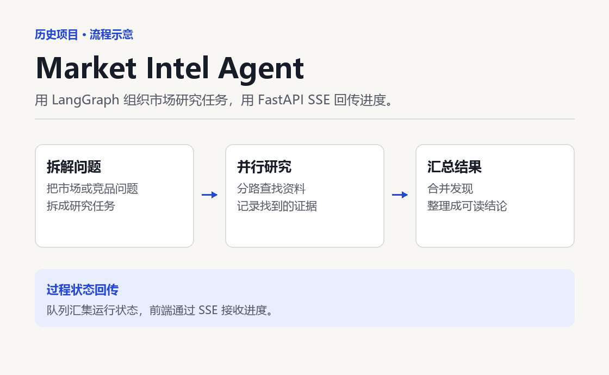
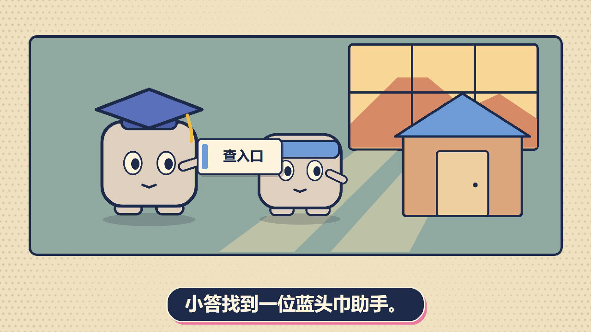

业务需求与规格
先定数据权限、接口和验收条件，再把文档上传、检索与问答拆成可联调的任务。
AskBase我从 Python / FastAPI 起步，先做多模型调用、知识库和生成式图像工作流，再主导跨境零售 AI Agent 中台落地。熟悉 LangGraph 编排、MCP 工具封装、RAG 与分层记忆，做过企业知识库、多 Agent 研究和 AI 工具产品。日常用 Claude Code 与 Codex 做规格驱动开发，并通过接口测试、代码审查和人工确认验收。
先定数据权限、接口和验收条件，再把文档上传、检索与问答拆成可联调的任务。
AskBase用 Orchestrator 按意图和复杂度调度任务，LangGraph 管理状态、重试和回跳。
跨境零售 AI Agent 中台把向量和关键词检索融合重排，回答附来源引用。用上下文压缩和分层记忆衔接长任务。
中台 RAG统一工具参数和返回结构，接入词库检索、合规校验与业务 API。
中台工具层规则校验结合 LLM-as-Judge，跟踪失败案例。退款、批量导出等高风险操作经人工确认。
中台评测用 Python、FastAPI 和 Celery 做服务，配合 Redis、PostgreSQL 与 Docker，保留任务日志和监控。
工作经历2021.09 – 2024.06
学习商务数据分析与应用，担任班长并联合创办摄影社团。
2023.12 – 2024.10
AI 应用工程师
用 Python 做多模型统一调用、限流、用量记录、熔断与降级，接入 Celery / Redis 批量推理。搭建 Dify RAG 文档处理流程，负责电商 LoRA 微调与 A/B 评估，将 ComfyUI 图像工作流封装为异步批量服务。
2024.11 – 2026.10
AI Agent 工程师
负责跨境零售 AI Agent 中台落地，以 Orchestrator 和 LangGraph 统一选品、Listing、客服、素材和运营日报。搭建混合检索、引用溯源和飞书知识同步，隔离部门知识库权限。封装 MCP 工具，加入规则校验、模型评测、人工确认、监控告警与 Docker 私有化部署。
2026 年起
迭代 JARVIS 与贾维斯指挥台，做多 Agent 市场研究演示和 AI 成本账，发布 claude-familiar。
统一选品、商品上新、客服、素材与运营日报的 AI 能力
工作项目 · AI Agent 工程师（核心开发）

跨会话记忆、任务编排、执行治理与贾维斯指挥台
个人项目 · 2026.01 至今
对标 CustomGPT：上传文档即得可溯源的企业 AI 助手
个人项目 · 独立全栈 · 约 3 周做到可收费

多源竞品研究与实时进度反馈
个人项目 · 2026.05

比较全球 AI 模型按量与订阅价格，按使用量估算月成本
个人项目 · 2026.10 至今 · 在线可用
Claude Code 状态栏 AI 宠物：任何终端都能跑、复用已登录的 Claude Code 零额外 API 成本、会读 CLAUDE.md 认识你的项目。7 个版本，npm 累计下载 1,475 次。
浏览 GitHub用 SVG 和 Canvas 在浏览器里交互查看 Agent 工作流。
浏览 GitHubAI 编码规范库，包含 AGENTS.md、CLAUDE.md 模板与提示词。
浏览 GitHub
从选题核查到文案、渲染、三路评审和发布包，归档 54 期正式成片。
查看流水线将首批 11 篇论文整理为通俗解读和 CLI 实操手册，再合并入飞书。
查看入库流程按风格与配色查图，多模态重排和去重后在飞书回图。
查看检索流程浏览器游戏作品。
打开作品2021.09 – 2024.06
商务数据分析与应用 · 大专 · 班长、联合创办摄影社团
项目代码主要由 Claude Code 和 Codex 根据规格生成。我负责拆需求、定数据流和接口、审查改动、跑验收，并能讲清各模块的输入、输出和失败时的行为。
把关键路径和失败场景写成接口测试样例，审查关键代码。对生成内容先做规则校验，再用 LLM-as-Judge 检查。退款或批量导出留给人工确认。
我会演示 claude-familiar 的安装和 Hook 事件如何改变状态栏，也可以打开 AI 成本账，演示如何比较按量价和订阅价。
我可以把分散的业务工具接入 Agent 中台，按任务复杂度调度，提供有引用的知识问答，并把权限、评测和运行监控纳入上线流程。
先过滤用户无权访问的知识源，再用向量和关键词并行召回、融合重排。检查答案是否能回到原文，失败样例用于补充检索和评测。
跨境零售团队分别接入选品、上新、客服、素材和日报工具，复合任务难编排，知识也各自存放。中台提供统一入口、任务调度与共享知识源。
Web / API（FastAPI） Orchestrator 分级调度（直路由 / ReAct / 多 Agent） LangGraph（意图、规划、路由、执行、汇总、校验） 业务 Agent RAG / 记忆 / 生图 / MCP PostgreSQL + Redis + Qdrant
简单请求直路由，中等任务交给 ReAct，复杂任务编排多个 Agent。工作流保留执行状态，允许失败重试和回跳。
选品与需求预测 · Apify 采集 Amazon BSR 和竞品，Prophet / XGBoost 预测需求，Claude 生成选品报告。置信度不足回跳补抓，Celery 每日刷新品类数据。
Listing 优化 · 关键词挖掘、竞品分析、英文文案与 SEO 合规评分分工处理，Hook 支持中断重试和自动复盘。
多语言客服 · 识别意图，订单查询调用 Shopify Admin API，投诉或强烈负面情绪转人工。FastAPI WebSocket 回传消息，Celery worker 按需扩容。
商品素材检索与生图 · Qdrant 支持文搜图、图搜图和图文混检。解析参考图的风格参数生成 Prompt，用 ComfyUI 批量产出商品素材。
评价售后与运营日报 · 获取数据、分类、生成内容，再经人工审核输出。退款、赔付和投诉保留人工确认。
查询改写 向量检索 + 关键词检索 融合排序 重排 LLM 生成并附引用

知识分为平台合规与行业关键词库、产品文档与客服话术、部门知识库。支持 PDF、Word、Excel 和 Markdown，接入飞书同步，按部门隔离权限。
对话、推理、视觉分开选型，异常时熔断和降级。工具链包括 RAG、记忆、生图和 MCP，词库检索、跨境合规校验等 Skill 统一入参与返回结构。规则与 LLM-as-Judge 检查文案准确性与违规项，失败样例回流改规则。用 Docker Compose 部署，保留任务日志与监控告警。
架构图中台架构 Hybrid RAG
多步骤任务调度分散，跨会话信息容易丢失，危险操作和定时作业需要统一管控。
协作入口（Claude Code / Codex / Grok） Hook（提交前召回 · 危险操作确认） 任务执行（Skill / MCP / 子代理） 记忆（Qdrant 混合检索 · 时序知识图谱 · 本地文件） 定时任务（服务器 cron）

Hook 在提示词提交时召回相关背景，在高危操作执行前要求确认。Skill 复用操作流程，MCP 接入工具，子代理分工处理任务。服务端用 Qdrant 混合检索和时序知识图谱，本地用文件记忆。Claude 定规格与验收，Codex 批量执行。
执行后触发 LLM-as-Judge 评估，失败案例经根因分析写成防御规则。卡片的 Hook、Skill 和定时脚本数来自历史服务器备份的顶层统计。
支撑 AI 知识视频和论文知识库的批量交付。延伸作品「贾维斯指挥台」正在开发，用 Electron 将 Claude Code、Codex 与 Grok 放进同一窗口并排对话、按目录分派任务、查看 Git 变更与验收结果。
企业想用自有文档搭 AI 助手，却卡在幻觉、搭建门槛、私有数据外泄和合规上。AskBase 对标 CustomGPT.ai：上传文档 → 自动建库 → 对话问答 → 每句回答都能点回原文。
上传文档（JWT 鉴权 · 知识库隔离） MinerU / Docling 解析分块 BGE-M3 向量化入 Qdrant BM25 + 向量混合检索 · BGE 重排 Claude 流式回答（SSE · 附来源引用）

完整 SaaS 闭环：Google OAuth 与邮箱验证码登录、知识库与文档管理、对话、数据分析、第三方数据连接器、Lemon Squeezy 卡支付订阅；多企业数据隔离；语音提问（Paraformer ASR）。FastAPI + PostgreSQL + Next.js。
先写技术规格再分阶段开发，每阶段接口测试验收；自查并修复 OAuth CSRF、验证码 HMAC、SSRF 防护、密钥强制校验、接口限流等 P0 / P1 问题；CI 推送 dev 分支自动部署。
2026-06-14 首次提交，07-02 自动部署上线 dev 环境：约 3 周从 0 做到可收费的完整 SaaS，共 10 个后端模块、47 个 API、43 个前端页面、272 次提交（数字取自本地仓库）。
多源市场研究需要拆任务、并行检索和综合发现，等待时还要知道任务进行到哪一步。
市场 / 竞品问题 规划角色（拆分研究任务） 并行研究（LangGraph · Tavily） 汇总角色（合并研究发现） 前端展示（FastAPI SSE 回传进度）
LangGraph 调度规划、并行研究与汇总，Tavily 检索资料。FastAPI SSE 回传进度事件，支持自带模型密钥（BYOK）切换模型。
历史档案记下演示与部署，流程图可回查计划、并发研究、汇总与进度回传。
作为 JARVIS 的公开演示场景上线，保留历史流程图和工作流摘录。
各家 AI 模型的定价口径分散，订阅价与按量价难以直接比较。
LiteLLM / OpenRouter + 人工核对订阅价 GitHub Actions 每日刷新 静态 JSON 价格 API Cloudflare Pages 前端
汇总模型调用与订阅价格，按使用量估算月成本，提供横向对比与 3D 城市视图。
模型价格由 GitHub Actions 定时同步，订阅价格人工核对。更新结果以静态 JSON 提供给站点。
在浏览器比较模型价格、订阅和预估月成本。